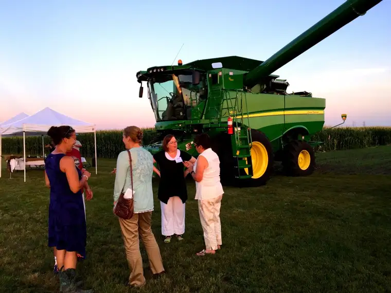
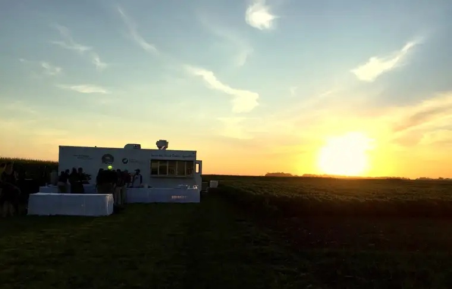

When I was young, I used to beg my mother to drag out our card table and eat our evening meal in our backyard, with the trees and birds and sunshine as ambiance.
She wasn’t always keen on the idea. Of course as a mother now I understand. It’s a lot of work to drag out all the utensils and condiments, down the stairs and up the stairs again, not to mention deal with the little critters whose home we’d invade to experience dinner in the out of doors.
Eating al fresco takes a lot of effort on the front and back ends, but the middle part is truly worth the effort. So when I received an invitation to attend the second annual North Dakota Banquet in a Field, I got that giddy feeling from girlhood once again.

Since I also attended the inaugural event last August, I knew the treat I was in for. It was like stepping back into a good dream that had been filled with sunflowers and corn fields, honey and hay, and honestly one of the most delicious beef-entree meals my mouth has ever experienced.
{kind=link}
{kind=link}
{kind=link}
Apparently there were few repeat participants at this year’s event. Yes, I was one of the lucky few! The organizers, Common Ground, want to spread the abundance and allow different people to experience it. But as Katie Pinke, my blogging and faith friend — and also a brainchild of the event — told me, the organizers had so appreciated my response to last year’s event that they wanted to give me another go.

And so it was that I found myself back, and blessed all over again, though with a new guest this time — my good friend Ann (who is the daughter of a farmer and whose son, who just graduated, is going into farming).
{kind=link}
The event, which celebrates farming and its products and life in North Dakota, is something I may not experience again but will always treasure. For an evening, I felt like Cinderella at an outdoor ball with 120 others, entering a magical world of beauty and blessing, only to return at midnight, the carriage turned back into a pumpkin, but with a heightened sense of the big, beautiful, life-giving world around me.
{kind=link}
What made this year’s Banquet in a Field even more personally memorable was its confluence with what would have been my father Robert Beauclair’s 80th birthday.
{kind=link}
Though my parents were educators, we grew up in a rural, farming community, and for a several-year span, my father worked as a hired hand, helping his farmer friends keep pace with the duties of farm life. I remember the day the cattle got loose and Dad saved the day, and picking from the excess of baby potatoes on Fred Clark’s land. I even remember having a picnic with my family on a patch of field one afternoon, and how wonderful it was, there next to the rows of alfalfa.
It seemed right that I would be celebrating Dad’s birthday by eating dinner in a field. I can’t help but feel that he was there with me.
Experiencing the farm through his work and having friendships with farm kids made me pine at times for life in the country. A part of me still reaches for the kind of solitude that life in the country alone can offer.

While I have come to embrace city life too, my appreciation for farming is also deeply embedded. And yet, I find it is so easy to forget our farmers, to just pick up our packs and cans of veggies from the grocery store without paying any mind to their source, remembering real people stand behind the crops that bring us the food that keeps us living.
The Banquet in a Field events have helped me remember. And not only remember, but relish.
{kind=link}

As people learn about this event, some have asked me where they can get tickets for next year’s event. I wish everyone could experience this, just once. Unfortunately, currently it’s by invitation only. It’s an event that takes a ton of work to pull off, and is meant to be more of a sampling for participants to bring home and share with others than anything. But I think it says something that people would be willing to pay for this experience. We yearn for these kinds of moments in life, of beautiful weather and good food to fill our tummies and souls.
{kind=link}
That the organizers chose two perfect evenings two summers in a row seems more than coincidental. Both years brought picture-perfect weather!
{kind=link}
In addition, this year, we all said grace together — an impromptu part of the evening that apparently had been suggested by one of the younger participants — and as we did, I allowed the glow of the sun to warm my soul. I couldn’t avoid the reality of the divine hand touching us all.

As a repeat participant, it was neat to see how things had been changed and improved upon from last year. For example, I don’t remember live music last year, but enjoyed this year’s harmonious offerings.
{kind=link}
The setup was slightly changed, too, and though in the same location, in a different field, but with the similar idea of stations for the tasting of samples of different North Dakota products, including, below, corn fritters cooked in canola oil, candied bacon, and lamb kabobs (wow!).
{kind=link}

{kind=link}
And being educated along the way.
{kind=link}
{kind=link}
Another change was being placed near real-life farmers during the main meal so we could learn about their lives firsthand. This was the adorable couple at our spot. Now, if your idea of a farmer is a guy in a straw hat and piece of wheat in his mouth, or chewing tobacco, perhaps this visual will open your mind to what a modern-day farmer looks like.
{kind=link}
I sat next to the cutie on the left and she shared with me how she met her husband at a funeral in North Dakota, and struck up a long-distance friendship, which led her to leave her home state of Kansas to become not just a farmer’s wife but a partner in the fields. She also has a passion for fitness and does that on the side. So, yes, farmers come in all different packages, just like the foods they create.
And of course, since it’s North Dakota, I saw new faces — Common Ground covers the whole state, east and west — but quite a few familiar ones, too. Meet Pam, or @DakotaPam as I’ve known her for years on Twitter. This was our first in-person meeting! What a treat!

Our chefs were, again, local favorites Tony and Sarah Nasello, who along with their helpers prepared quite an amazing spread once again.
{kind=link}

{kind=link}

The carved beef tenderloin with horseradish cream sauce, and adorned by easy potato salad, pickled radishes and beets and rustic Italian cucumber tomato salad = perfection. I know that I will probably never taste anything so delicious as this piece of meat. I wish I could hand you a sample through the computer.
{kind=link}
And it was all topped off with chef Sarah’s fabulous honey vanilla ice cream served in a Belgian cookie cup!
{kind=link}
What I loved most of all was just talking to the people passionate about farming. They reminded me of myself when I get excited about something and wish others could know the secrets I’m holding in my heart that aren’t meant to be hidden.
This industry, like any, takes a lot of heat at times; there are a lot of competing interests and ideas about what farmers really do and how they go about their work. But what I experienced both years were real people trying to do good things for our community and beyond. People with families, strong values, and a passion to feed the world through the work of their hands and God’s blessing.
{kind=link}
The night was like a fairytale, but it was also the result of a lot of hard work. I wasn’t there for the setup nor cleanup but I know this didn’t just appear at the flash of a magic wand. It took the efforts of many rolling up their sleeves for what they believe in.
{kind=link}
{kind=link}
Common Ground wants people to visit their farms, to take a combine ride and just experience farm life for a while. If you’re in the area and want to take advantage of this generous offer, I’m sure they’d be happy to accommodate you.
But whether you do that, or just enjoy this event through my lens today, I hope you take up this one challenge in the coming months. If you have a chance to meet a farmer, or know one already, don’t forget to thank them for the toiling that brings food to your mouth and those of your loved ones. Farmers are our friends, and they deserve our gratitude for the bounty they bring.
{kind=link}
Q4U: Have you hugged a farmer today? 🙂